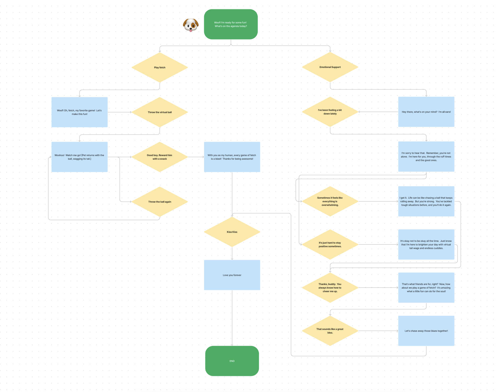
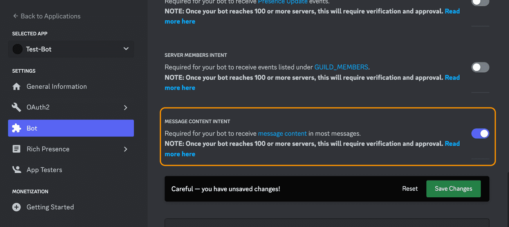
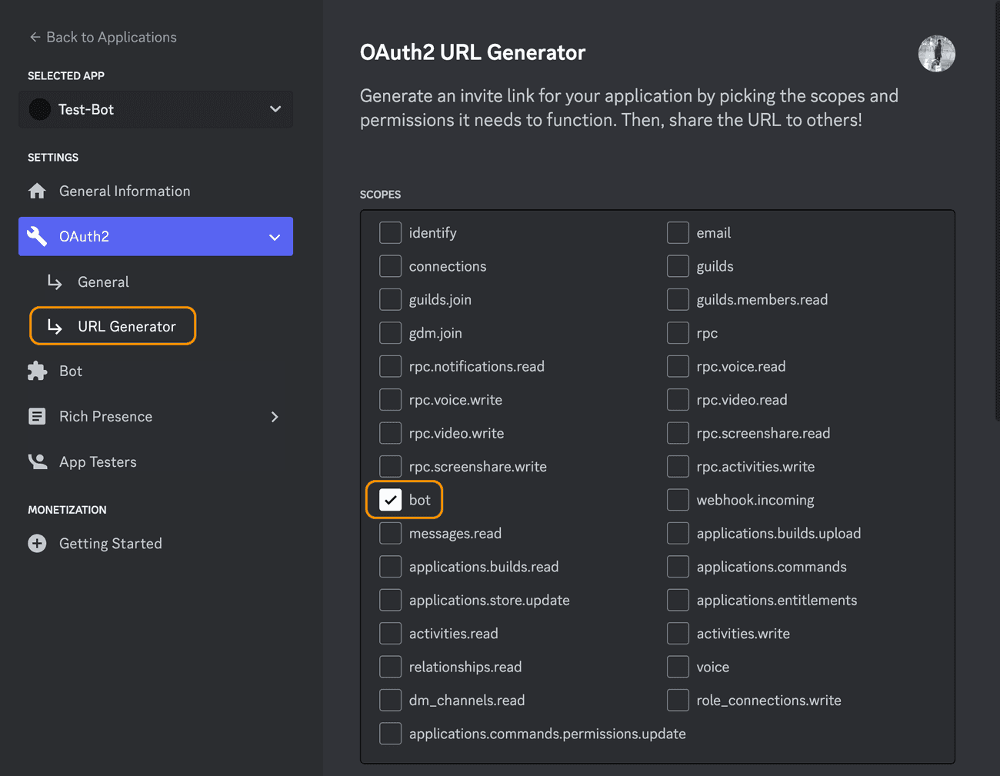
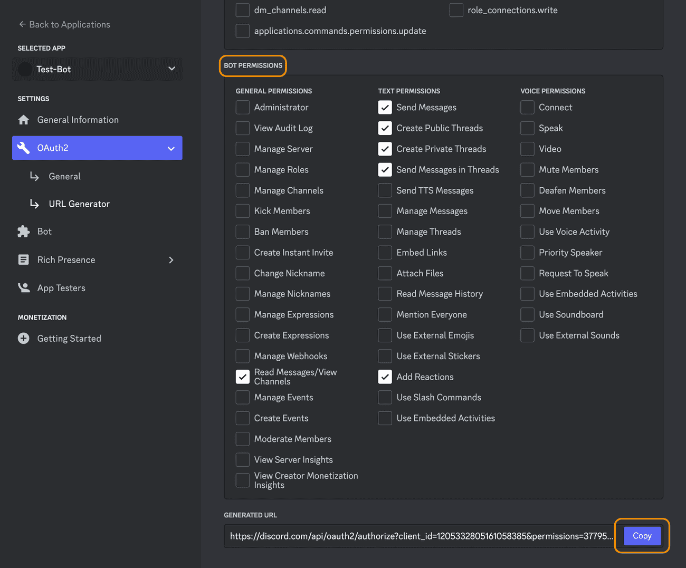
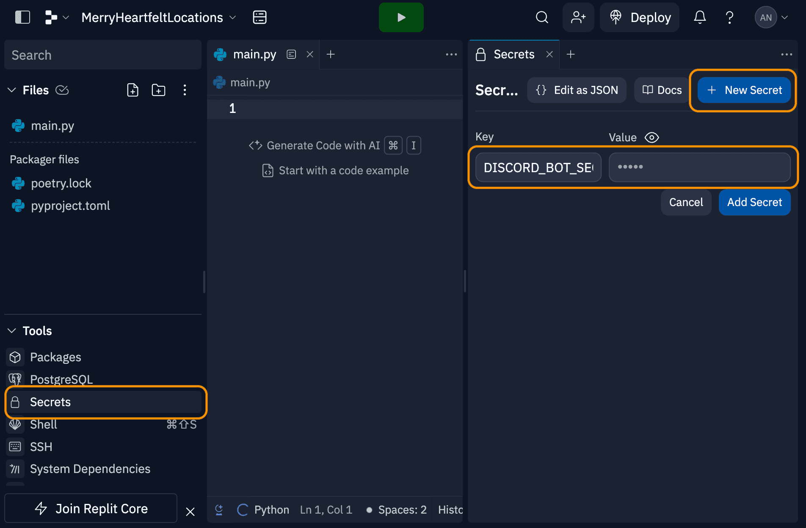
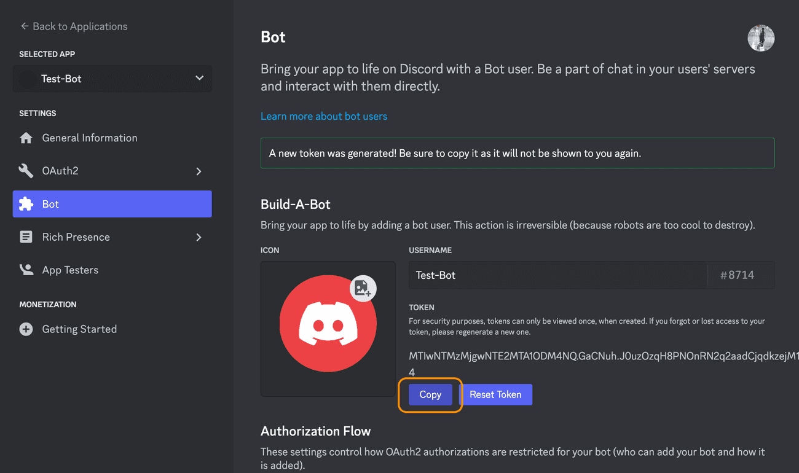
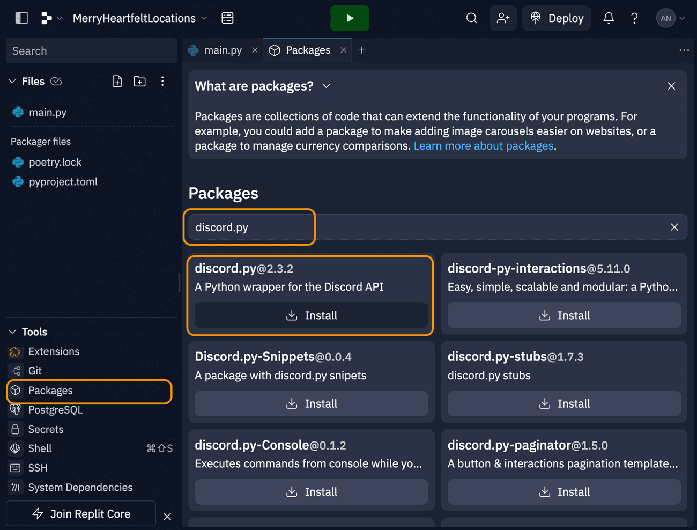

Chatbots with Simple AI
waking up the virtual pet dog
Adopting the identity of a virtual pet could add a playful and endearing element to the chatbot's persona. Users could engage in nurturing activities, such as feeding, playing, and bonding, fostering a sense of companionship and responsibility.
About Pixel Pet Chatbot:
Benefits:
1. Companionship: Pixel provides the joy of interacting with a virtual puppy, offering companionship and endless tail wags.
2. 24/7 Availability: No need to wait for office hours - Pixel is ready to chat and play with you anytime, day or night.
3. Emotional Support: Pixel offers unconditional love and companionship, providing a source of comfort and reassurance during challenging times.
Audience:
Dog Enthusiasts: Even if you don't have a dog of your own, Pixel provides a platform for fun and informative conversations about all things canine.
Functionality:
1. Chat and Play: Engage in casual conversation with Pixel or enjoy interactive games and activities for some virtual playtime.
2. Comforting Messages: Receive uplifting and supportive messages from Pixel, designed to provide comfort and encouragement when you need it most.
With Pixel Chatbot, you'll always have a virtual tail wagging by your side, ready to offer companionship, guidance, and plenty of doggone fun!
The Decision Tree:
Create app in the Discord UI
1. Sign up for a free Discord account 2. Go to the Discord developer portal and click on the 'New Application' button. 3. Click on the "Bot" tab, scroll down to the 'Privileged Gateway Intents' section, and turn on the 'Message Content Intent' switch.
Now I add my bot to the discord servers I want it to run in. For this project, we'll add all of our bots to the server I've created 'A Place to Talk to Bots' 1. Use the invite link to join the project server: 2. Go back to your application in the Discord developer portal 3. Navigate to the 'OAuth2 -> URL Generator' tab 4. Under 'Scopes' check the 'bot' option 
Setup Repl.it
1. Make an account on Repl.it 2. Click on the Create Button 3. Select 'python' under Template, give your project a name, and then click 'Create Repl' Before we start writing code, we have to add the Discord Bot Token to our Repl.it project. This will connect our code to the Bot we created. 4. Add the Discord Bot Token to the 'Secrets' tab of Repl.it. - Go to the Discord Developer Portal, click on the Application you created earlier - Navigate to the Bot tab, and under the 'Token' section, click on the copy button. (If the copy button doesn't appear, click on the 'Reset Token' button) - In your Repl.it project, click on the 'Secrets' tool under Tools section in the sidebar. - Create a New Secret. Name the key DISCORD_BOT_SECRET and in the value field paste the Token that you copied from the Discord Developer Portal. 
Finally, lets install the main packages that we will be using. You can use this same process to install other useful python packages in the future. 5. Click on the packages tool under the Tools section in the sidebar 6. In the new Packages pane, search for discord.py, and click on the plus icon to install the library.
https://replit.com/@xinyidongzoey/petchat#main.py
1. Create Node Class
class Node:
def __init__(self, value, answer="", children=[]):
self.value=value
self.answer = answer
self.children = children
#setup the Node
2. Create an Example Decision Tree
node11 = Node(' Woohoo! Watch me go! [Pet returns with the ball, wagging its tail.]', answer= 'Good boy. Reward him with a snack')
node5 = Node('With you as my human, every game of fetch is a blast! Thanks for being awesome!', answer= 'Good boy. Reward him with a snack')
node6 = Node('Woohoo! Watch me go! [Pet returns with the ball, wagging its tail.]', answer= 'Throw the ball again', children=[node11])
node3 = Node(' Woohoo! Watch me go! [Pet returns with the ball, wagging its tail.]', answer= 'Throw the virtual ball', children=[node5,node6])
node10 = Node('Let us chase away those blues together!', answer='That sounds like a great idea.')
node9 = Node('That is what friends are for, right? Now, how about we play a game of fetch? It is amazing what a little fun can do for the soul!', answer= 'Thanks, buddy. You always know how to cheer me up.', children=[node10])
node7 = Node('I get it. Life can be like chasing a ball that keeps rolling away. But you are strong. You have tackled tough situations before, and you will do it again.', answer= 'Sometimes it feels like everything is overwhelming.', children=[node9])
node8 = Node('It is okay not to be okay all the time. Just know that I am here to brighten your day with virtual tail wags and endless cuddles.', answer= 'It is just hard to stay positive sometimes.', children=[node9])
node4 = Node('I am sorry to hear that. Remember, you are not alone. I am here for you, through the ruff times and the good ones.', answer= 'I have been feeling a bit down lately', children=[node7,node8])
node1 = Node('Woof! Oh, fetch, my favorite game! Let us make this fun!', answer= 'Play fetch', children=[node3])
node2 = Node('Hey there, what is on your mind? I am all ears!', answer='Emotional Support', children=[node4])
root = Node('Woof! I am ready for some fun! What is on the agenda today?', children=[node1, node2])
3. Create GuessOptionsView Class
class GuessOptionView(View):
def __init__(self, node):
super().__init__()
for child in node.children:
self.add_item(GuessButton(child))
# Setup the GuessOptionsView
async def handleButtonPress(self, interaction, node):
if(node.children==[]):
await interaction.response.send_message(content=f'Woof!...{node.value}',view=WrongView(node))
else:
await interaction.response.send_message(content=node.value, view=GuessOptionView(node))
# What should happen when a button is pressed?
4. Create WrongView
class WrongView(View):
def __init__(self, node):
super().__init__()
self.node = node
# Setup the WrongView
@discord.ui.button(label="Kiss Kiss!")
async def buttonCallback1(self, interaction, button):
await interaction.response.send_message("Love you forever")
5. Create GuessButton
class GuessButton(Button):
def __init__(self, node):
super().__init__(label=node.answer)
self.node = node
# Setup the GuessButton
async def callback(self, interaction):
await self.view.handleButtonPress(interaction, self.node)
# What happens when this button is pressed
6. Run the Discord Bot
intents = discord.Intents.default()
intents.message_content = True
client = discord.Client(intents=intents)
@client.event
async def on_ready():
print(f'We have logged in as {client.user}')
@client.event
async def on_message(message):
if message.author == client.user:
return
if message.content.startswith('pet'):
await message.channel.send(content=root.value, view=GuessOptionView(root))
token = os.getenv("DISCORD_BOT_SECRET")
client.run(token)
These are all the steps to build a chatting pet dog
Thanks for watching